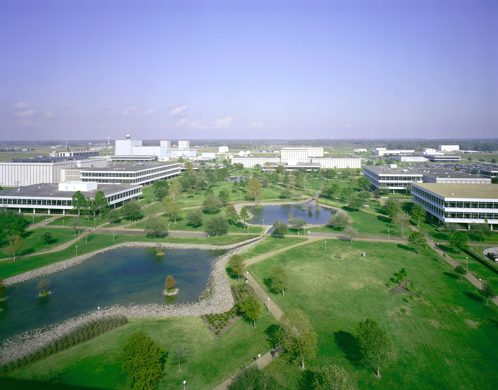

SpaceCodeTech - это технологическая компания, занимающаяся разработкой программного обеспечения и оборудования для космической индустрии. Мы объединяем передовые IT решения с вызовами космоса, чтобы создавать новые возможности для исследований и открытий. Основанная в 2025 году, SpaceCodeTech начала свой путь как стартап, с фокусом на разработке программных решений для космической отрасли. С течением времени мы выросли в инновационную компанию, предоставляющую широкий спектр технологических продуктов и услуг для космических миссий и исследований.
SpaceCodeTech - грандиозных возможностей, смелых открытий и бесконечных горизонтов космоса! Мы - технологический пионер, смешивающий в своем деле передовые IT-решения с вызовами бескрайнего космоса. Открывая двери в неведомые галактики и звездные системы, мы преобразуем мечты в реальность и делаем возможным невозможное. Основанный в 2025 году, SpaceCodeTech вырос от стартапа до мирового лидера в инновационных технологиях для космической индустрии. Наши программные решения и космическое оборудование становятся надежным партнером в бескрайних просторах космоса, обеспечивая успешные миссии и исследования. Давайте вместе откроем новые горизонты и сделаем шаг в будущее, где возможности космоса становятся реальностью благодаря SpaceCodeTech